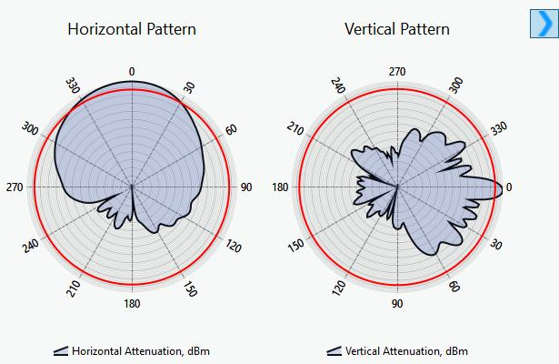
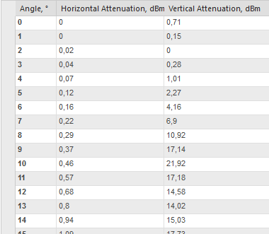
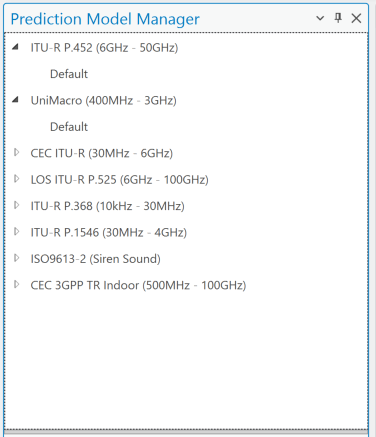
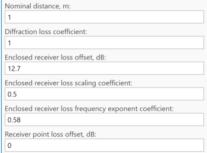
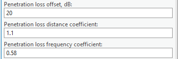
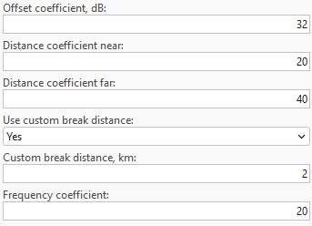
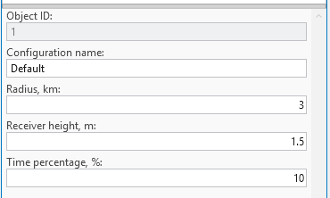

Data Management — Prediction Model Manager
Note: Structure is common across modules, but module-specific model content may differ slightly.
7.7 Prediction Model Manager
The CE Path Loss Modelling aims to perform near-deterministic calculation of received signal levels at each specific point (pixel) in the network’s target coverage area by applying selective path loss model depending on the radio visibility condition between the transmitter antenna vis-à-vis a receiver antenna located at a given point in coverage area. The radio visibility is evaluated based on the DTM, Obstacles and Clutter path profile information, as described in previous section. This verification of radio visibility will result in the


 receiver antenna point assigned into one of three possible radio visibility conditions:
• Line-of-Sight (LOS) – occurs when there are neither terrain irregularities, obstacles or clutter
interposing the direct radio path between the transmitter and receiver antennas. The radio path is
understood to include the 1st Fresnel zone around the direct line and account for Spherical Earth
effect. The LOS condition is illustrated by the path profile depicted in Fig. 3(a).
• Obstructed LOS (OLOS) – occurs when the direct radio propagation line is interposed by clutter,
see illustration in Fig. 3(b).
• Non-LOS (NLOS) – occurs when the direct radio propagation line is interposed by terrain bulges
or obstacles, see illustration in Fig. 3(c).
(a) Example of path profile with LOS condition (green line of direct radio link)
receiver antenna point assigned into one of three possible radio visibility conditions:
• Line-of-Sight (LOS) – occurs when there are neither terrain irregularities, obstacles or clutter
interposing the direct radio path between the transmitter and receiver antennas. The radio path is
understood to include the 1st Fresnel zone around the direct line and account for Spherical Earth
effect. The LOS condition is illustrated by the path profile depicted in Fig. 3(a).
• Obstructed LOS (OLOS) – occurs when the direct radio propagation line is interposed by clutter,
see illustration in Fig. 3(b).
• Non-LOS (NLOS) – occurs when the direct radio propagation line is interposed by terrain bulges
or obstacles, see illustration in Fig. 3(c).
(a) Example of path profile with LOS condition (green line of direct radio link)
(b) Example of path profile with OLOS condition (yellow segment of radio link path) (c) Example of path profile with NLOS condition (red segment of radio link path) (d) Example of path profile with OLOS+NLOS condition (yellow+red segment of radio link path) Fig. 3. Illustration of different LOS conditions Depending on the LOS condition for the receive antenna at specific location (area map pixel), the CE tools


 will apply the specific sub-set of path loss prediction model, as explained in the following section.
Note that when the receiver is located indoors, the special Outdoor-to-Indoor propagation function will be
applied in addition to basic path loss, as explained in the separate section at the end of this chapter.
will apply the specific sub-set of path loss prediction model, as explained in the following section.
Note that when the receiver is located indoors, the special Outdoor-to-Indoor propagation function will be
applied in addition to basic path loss, as explained in the separate section at the end of this chapter.
7.7.1 Models
Prediction models available in Cellular Expert support frequencies from 10kHz to 350 GHz.
To open the Prediction Model Manager dialogue, click on the Prediction Model Manager tool in


the Data Management section. CEC ITU-R 3GPP Model (100MHz – 6GHz) is a combination model intended for use in a variety of different radiocommunication systems which is derived explicitly from ITU-R path loss modelling methods as follows: a. Receive antenna in LOS condition – path loss calculated as FSL based on Recommendation ITU- R P.525 (ref URL). b. Receive antenna in OLOS condition – total path loss modelled as a combination of basic FSL calculated based on Recommendation ITU-R P.525 (ref URL) with included dual slope option and clutter loss modelling based on Recommendation ITU-R P.2108 (ref URL). c. Receive antenna in NLOS condition – path loss as a combination of basic FSL calculated based on Recommendation ITU-R P.525 (ref URL) with included dual slope option, additional losses due to diffraction calculated based on Recommendation ITU-R P.526 (ref URL). d. Receive antenna in OLOS+NLOS condition – path loss as a combination of basic FSL calculated based on Recommendation ITU-R P.525 (ref URL) with included dual slope option, additional losses due to diffraction calculated based on Recommendation ITU-R P.526 (ref URL), and clutter loss modelling based on Recommendation ITU-R P.2108 (ref URL). e. Receive antenna in the clutter (building, vegetation, etc) – path loss is calculated as described above based on LOS, OLOS and NLOS conditions, and additional penetration loss is added to simulate Outdoor-to-Indoor scenario which is based on ITU-R P.833 recommendation (if receiver is in vegetation type clutter) or based on 3GPP TR 38.901 (ref URL) (if receiver is in a building). ITU-R P.452 Model (6GHz – 50GHz) is provided as a universally applicable model with a very wide frequency range from 0.1-50 GHz. Its implementation is based on the methodology described in the Recommendation ITU-R P.452 (ref URL). This model does not provide for definition of OLOS visibility condition; instead, it considers clutter as part of the general obstacles category and accordingly distinguishes only two radio visibility cases:a. Receive antenna in LOS condition – path loss model based on FSL principle. b. Receive antenna in NLOS condition – total path loss modelled using a combination of basic transmission losses and losses due to diffraction. ITU-R P.1546 Model (30MHz – 4GHz) (ref URL) is a widely recognized radio propagation prediction method developed by the International Telecommunication Union (ITU). It is primarily used for estimating point- to-area radio signal coverage in the frequency range from 30 MHz to 4000 MHz over terrestrial paths. This model is especially suitable for broadcasting, land mobile, and fixed services. Key Features • Versatile Application: Supports predictions over land, sea, and mixed paths, making it adaptable to various geographic conditions. • Input Parameters: Takes into account factors such as transmitter and receiver heights, terrain profile, clutter (buildings, vegetation), climate, and time/location variability. • Time and Location Variability: Predictions can be tailored for different statistical reliability levels (e.g., 50% or 10% time availability). • Clutter and Terrain Handling: The model can incorporate detailed digital elevation models (DEM) and clutter data for more accurate predictions, reflecting the influence of buildings, forests, and other surface features. Use in Cellular Expert In the Cellular Expert software, the ITU-R P.1546 model is implemented to support real-world coverage planning and regulatory studies. Users can configure environmental parameters and resolution settings to match local conditions and improve prediction accuracy. LOS ITU-R P.525 Model (6GHz – 100GHz) is the FSL path loss calculated based on the method in Recommendation ITU-R P.525 (ref URL). As such it could be used for modelling radio links where LOS is considered a necessary condition, e.g., for Fixed (Point-to-Point) Links or Mobile Systems in mmWave bands. UniMacro Model (400MHz – 3GHz) is the CE’s proprietary combination model developed over the years of practical experience with the operational planning of cellular mobile networks in the frequency ranges from 400-3000 MHz. It had been fine-tuned to produce coverage predictions that are most closely aligned with what could be expected to be experienced by the actual mobile network users in the field. The model will model different path losses depending on radio visibility conditions as follows: a. Receive antenna in LOS condition – path loss model based on FSL principle and dual slope based on breakpoint distance. b. Receive antenna in OLOS, or NLOS condition – path loss modelled using Extended Hata (Open Area) model with additional losses due to diffraction calculated based on Recommendation ITU-R P.526 (ref URL). c. Receive antenna in the clutter (building, vegetation, etc) – path loss is calculated as described above based on LOS, OLOS and NLOS conditions, and additional penetration loss is added to simulate Outdoor-to-Indoor scenario which is based on ITU-R P.833 recommendation (if receiver is in vegetation type clutter) or based on 3GPP TR 38.901 (ref URL) (if receiver is in a building). ITU-R P.368 (10kHz – 30MHz) provides a standardized prediction method for assessing the ground-wave field strength of radio waves in the 10 kHz to 30 MHz frequency range. This frequency band is primarily associated with long-range communication systems using amplitude modulation (AM) and shortwave bands, often for maritime, aeronautical, military, and broadcasting services.
This model offers guidance for engineers, planners, and researchers working on system design and analysis in the MF (Medium Frequency) and HF (High Frequency) bands. The ITU-R P.368 model calculates signal strength based on several key environmental and system parameters: Frequency (f) Higher frequencies tend to attenuate more rapidly over ground. The attenuation rate increases significantly above 3 MHz. Distance (d) Field strength diminishes with increasing distance due to geometrical spreading and absorption by the ground and atmosphere. Surface refractivity, Surface Conductivity (σ) and Relative Permittivity (εᵣ) The surface over which the wave propagates critically affects signal strength: • Sea water: High conductivity, minimal loss • Dry land or desert: Low conductivity, high loss • Typical values range from: o Conductivity: 10⁻⁴ to 5 S/m o Relative permittivity: 4 to 81 ISO 9613 standard provides a validated, practical method for predicting the outdoor propagation of sound, and is increasingly applied in siren sound modeling within public security, emergency warning systems, and defense operations. This modeling ensures that acoustic alert systems (e.g. civil defense sirens, disaster warnings, military alert signals) achieve their intended coverage, intelligibility, and effectiveness across various terrain and urban environments. Purpose in the Public Security Context In emergency and defense scenarios, reliable audibility of sirens is critical for: • Civil alert and evacuation systems • Military base perimeter alarms • Air raid or missile defense warning networks • Disaster alert systems (e.g. earthquakes, tsunamis, nuclear incidents) By applying ISO 9613-2, engineers can model how far a siren can be heard under specific environmental conditions, optimizing: • Placement and spacing of sirens • Sound power selection • Minimization of acoustic shadow zones • Compliance with national safety and civil defense regulations The model assumes standard favorable propagation: • Downwind or moderate inversion conditions • Ambient temperature ~10 °C • Relative humidity ~70% These are conservative conditions ensuring that siren reach is never overestimated, supporting public safety margin planning.
CEC 3GPP TR Indoor (500MHz – 100GHz) Propagation Model is a high-frequency path loss model designed for indoor radiocommunication systems operating within the 500 MHz to 100 GHz range. It builds upon the CEC ITU-R 3GPP model (100 MHz – 6 GHz) by adapting it to complex indoor environments, such as: • Office buildings • Residential units • Shopping centers • Industrial halls This model integrates core ITU-R recommendations for free-space loss and penetration effects, while leveraging 3GPP-specific methods for accurate simulation of indoor multipath, wall attenuation, and frequency-dependent fading. Purpose and Use Cases The model is intended for: • Indoor wireless access network design (e.g., Wi-Fi, 5G NR, mmWave) • System-level simulations for indoor coverage planning • Performance evaluation of in-building penetration for outdoor base stations • Integration with dual-slope and multi-scenario path loss modeling frameworks 7.7.1.1 CEC ITU-R 3GPP Model Model application This deterministic model is designed for precise tracking of the main, strongest radio ray, while also empirically modeling the scattering of other rays around the receiver. It applies to all ranges of cellular mobile and public safety networks, including 2G, 3G, 4G, and 5G, within the 30 MHz to 6 GHz frequency range. The model is recommended for accurate wide-area propagation and coverage modeling, especially when precise and up-to-date topographic data are available. This includes Digital Terrain Models (DTM), building data (including height information), and vegetation data (with height details) derived from a Digital Surface Model (DSM). Ideally, these data should be created with LiDAR or similar methods, at a resolution of at least 10 meters, though 5, 2, or even 1 meter or higher is preferable for optimal accuracy. When building data and their heights are not available, and only DTM and clutter data at a resolution of 10 meters or lower are accessible, the UniMacro Model should be considered for wide-area propagation and coverage modeling in a slightly narrower frequency range of 400 MHz to 3 GHz. Default settings General settings to calculate Model loss • Offset coefficient (dB) – represents the offset in decibels added to the path loss grid. The default value is 32 dB. • Distance coefficient – defines the slope based on the distance between the cell and the receiver location, with a default value of 20. • Distance coefficient obstructed – represents the slope based on the obstructed distance between
the cell and the receiver location. The default value is 40. • Frequency coefficient – indicates the slope determined by the frequency value, with a default value
 of 20.
Clutter class to calculate diffraction, clutter loss, penetration loss and receiver loss
The Clutter Class option defines several predefined clutter categories, each with unique values for
diffraction loss, clutter loss, penetration loss, and receiver loss coefficients.
of 20.
Clutter class to calculate diffraction, clutter loss, penetration loss and receiver loss
The Clutter Class option defines several predefined clutter categories, each with unique values for
diffraction loss, clutter loss, penetration loss, and receiver loss coefficients.
These parameters describe how a signal is impacted when it passes through or terminates in a specific


clutter class. Key Parameters: • Nominal distance, m – the average distance between objects within the clutter class, ranging from 1 to 100 meters.• Diffraction loss coefficient – a multiplier used in diffraction calculations. Lower values result in reduced diffraction loss, while higher values increase it. Typically, this coefficient is higher for buildings compared to forests or other clutter types.ltiplier for diffraction calculations. If value is lower, diffraction will be lower, if higher – then diffraction will be higher. Usually, for buildings clutter class this parameter is higher then forest or other clutter classes. • Enclosed receiver loss offset, dB – the initial entry loss into the clutter class, expressed as an offset in dB, which is added to the path loss grid. • Enclosed receiver loss scaling coefficient – represents additional signal loss as a function of the distance traveled within the clutter class. Higher values increase path loss. • Enclosed receiver loss frequency exponent coefficient – reflects additional loss inside the clutter class based on frequency. Higher values increase path loss, particularly at higher frequencies. • Receiver point loss offset, dB – an additional loss offset in dB applied to the path loss grid, representing user equipment (UE) losses. Clutter Classes default values Penetration Penetration receiver Penetration receiver receiver loss loss scaling loss frequency offset coefficient exponent coefficient 17 0.25 1 Open / Terrain 0 0.82 0.65 Grassland 0 0.82 0.65 Sparse forest 0 0.89 0.65 Medium dense forest 0 0.95 0.65 Very dense forest 0 0.89 0.65 Low density urban (Low buildings) 0 0.89 0.65 Low density urban (High buildings) 0 0.89 0.65 Medium density urban (Low buildings) 0 0.89 0.65 Medium density urban (High buildings) 0 0.89 0.65 High density urban (Low buildings) 0 0.89 0.65 High density urban (High buildings) 0 0.89 0.65 High density urban (Very high buildings) 0 0.89 0.65 Building blocks 0 0.89 0.65 Transportation 0 0.89 0.65 Agriculture 0 0.89 0.65 Plantation 0 0.89 0.65 Parks 0 0.89 0.65 Airport 0 0.89 0.65 Sea 0 0.89 0.65 Inland water 5 0.25 1 Concrete building
2 0.25 1 | Glass building | 2 | 0.25 | 1 | |---|---|---|---| | Wood building | 2 | 0.25 | 1 | | Low loss building | 8.5 | 0.25 | 1 | | High loss building | 17 | 0.25 | 1 | High loss building 7.7.1.2 ITU-R P.452 Model Model application This model is designed to estimate radio signal propagation over long distances, including terrestrial paths.
 It is specifically designed to predict signal attenuation caused by various mechanisms, such as diffraction,
tropospheric scatter, ducting, and reflections from the Earth's surface, across frequencies ranging from 0.1
GHz to 50 GHz. While other prediction model covers frequencies from 100MHz to 6GHz, we recommend
to use it from 6GHz to 50GHz frequencies.
This model is particularly well-suited for microwave links and is widely used for planning and interference
analysis in fixed and mobile radio communication systems. By accounting for the effects of terrain,
atmospheric conditions, and other factors, it helps engineers assess link reliability and optimize network
performance in a variety of environmental scenarios.
Default settings
General settings to calculate Model loss
• Offset coefficient (dB) – represents the offset in decibels added to the path loss grid. The default
value is 32 dB.
• Distance coefficient – defines the slope based on the distance between the cell and the receiver
location, with a default value of 20.
• Frequency coefficient – indicates the slope determined by the frequency value, with a default value
of 20.
Multipath and focusing
In ITU-R P.452, the correction for multipath and focusing effects accounts for signal enhancements caused
by constructive interference and atmospheric focusing. This adjustment reduces the total path loss under
It is specifically designed to predict signal attenuation caused by various mechanisms, such as diffraction,
tropospheric scatter, ducting, and reflections from the Earth's surface, across frequencies ranging from 0.1
GHz to 50 GHz. While other prediction model covers frequencies from 100MHz to 6GHz, we recommend
to use it from 6GHz to 50GHz frequencies.
This model is particularly well-suited for microwave links and is widely used for planning and interference
analysis in fixed and mobile radio communication systems. By accounting for the effects of terrain,
atmospheric conditions, and other factors, it helps engineers assess link reliability and optimize network
performance in a variety of environmental scenarios.
Default settings
General settings to calculate Model loss
• Offset coefficient (dB) – represents the offset in decibels added to the path loss grid. The default
value is 32 dB.
• Distance coefficient – defines the slope based on the distance between the cell and the receiver
location, with a default value of 20.
• Frequency coefficient – indicates the slope determined by the frequency value, with a default value
of 20.
Multipath and focusing
In ITU-R P.452, the correction for multipath and focusing effects accounts for signal enhancements caused
by constructive interference and atmospheric focusing. This adjustment reduces the total path loss under
favorable conditions, such as over-water paths or specific atmospheric gradients, ensuring more accurate signal predictions. Possible values Yes or No. Clutter class to calculate penetration loss Clutter class option describes several fixed Clutter names with penetration loss coefficients. These parameters describe how a signal is impacted when it passes through or terminates in a specific clutter class. Key Parameters: • Penetration loss offset, dB – the initial entry loss into the clutter class, expressed as an offset in dB, which is added to the path loss grid. • Penetration loss distance coefficient – represents additional signal loss as a function of the distance


traveled within the clutter class. Higher values increase path loss. • Penetration loss frequency coefficient – reflects additional loss inside the clutter class based on frequency. Higher values increase path loss, particularly at higher frequencies. Clutter Classes default values Penetration Penetration receiver Penetration receiver receiver loss loss scaling loss frequency offset coefficient exponent coefficient 17 0.25 1 Open / Terrain 0 0.82 0.65 Grassland 0 0.82 0.65 Sparse forest 0 0.89 0.65 Medium dense forest 0 0.95 0.65 Very dense forest 0 0.89 0.65 Low density urban (Low buildings) 0 0.89 0.65 Low density urban (High buildings)0 0.89 0.65 Medium density urban (Low buildings) 0 0.89 0.65 Medium density urban (High buildings) | Medium density urban (Low buildings) | 0 | 0.89 | 0.65 | |---|---|---|---| | Medium density urban (High buildings) | 0 | 0.89 | 0.65 | | High density urban (Low buildings) | 0 | 0.89 | 0.65 | | High density urban (High buildings) | 0 | 0.89 | 0.65 | | High density urban (Very high buildings) | 0 | 0.89 | 0.65 | | Building blocks | 0 | 0.89 | 0.65 | | Transportation | 0 | 0.89 | 0.65 | | Agriculture | 0 | 0.89 | 0.65 | | Plantation | 0 | 0.89 | 0.65 | | Parks | 0 | 0.89 | 0.65 | | Airport | 0 | 0.89 | 0.65 | | Sea | 0 | 0.89 | 0.65 | | Inland water | 0 | 0.89 | 0.65 | | Concrete building | 5 | 0.25 | 1 | | Glass building | 2 | 0.25 | 1 | | Wood building | 2 | 0.25 | 1 | | Low loss building | 8.5 | 0.25 | 1 | | High loss building | 17 | 0.25 | 1 | High loss building 7.7.1.3 UniMacro Model Model application This model is designed for deterministic tracking of the main, strongest radio ray in Line of Sight (LOS) areas, while propagation modeling in Obstructed Line of Sight (OLOS) and Non-Line of Sight (NLOS) areas uses empirically determined parameters defined in ITU-R and 3GPP recommendations. It also models the scattering of other rays around the receiver. The model applies empirically validated values for the 400 MHz to 3 GHz frequency range and is suitable for modeling all cellular mobile and public safety networks, including 2G, 3G, 4G, and 5G, within that frequency range. This model is recommended for wide-area propagation and coverage modeling when building data and their heights are unavailable, and only DTM and clutter data at a resolution of 10 meters or lower are accessible. For accurate wide-area propagation and coverage modeling where building data and their heights are available, the CEC ITU-R 3GPP Model is recommended, offering a broader application frequency range of 100 MHz to 6 GHz. Default settings General settings to calculate Model loss
If Tx and Rx is in LOS condition: Fig. 4. Illustration of LOS conditions Line of Sight coefficients are used to calculate general model loss. • Offset coefficient (dB) – represents the offset in decibels added to the path loss grid. The default


value is 32 dB. • Distance coefficient near – defines the slope based on the distance between the cell and the receiver location, with a default value of 20. • Distance coefficient far – represents the slope based on breakpoint distance between the cell and the receiver location. The default value is 40. • Use custom break distance – if value Yes, enables custom Fresnel breakpoint distance value. The path loss dependence on the distance is split into near and far zones by the breakpoint distance and the effect is only applied for Line of Sight condition. • Custom break distance, km – Fresnel breakpoint distance then path loss is calculated using Distance coefficient far parameter. • Frequency coefficient – indicates the slope determined by the frequency value, with a default value of 20.If Tx and Rx is in OLOS or NLOS condition, then Hata 9999 equation is used. 9999 Model is the Ericsson’s implementation of Hata Model. Ericsson provides the steering parameters of 9999 Model for different environments; therefore it’s very convenient just to apply in this form as the default parameters. • Hata Loss: A0 - constant offset in dB this value simply added to loss grid. Adjusting this value, you can minimize mean error. It regulates the absolute level of the loss curve. Default value 36.2. • Hata Loss: A1 - distance influence coefficient. Physically it represents loss dependant on distance such as atmospheric (dust, hydrometeors, etc...) losses. It regulates slope of the curve. Default value 30.2. • Hata Loss: A2 - transmitter height influence coefficient. It is related to errors in DTM, real Earth curvature, etc. It regulates loss curve vertical position like the A0, but with respect to antenna height.
 Default value -12.
• Hata Loss: A3 - Okumura-Hata type of multiplying factor for log(h )log(d). Default value 0.1.
M
Clutter class to calculate diffraction, clutter loss, penetration loss and receiver loss
The Clutter Class option defines several predefined clutter categories, each with unique values for
diffraction loss, clutter loss, penetration loss, and receiver loss coefficients.
Default value -12.
• Hata Loss: A3 - Okumura-Hata type of multiplying factor for log(h )log(d). Default value 0.1.
M
Clutter class to calculate diffraction, clutter loss, penetration loss and receiver loss
The Clutter Class option defines several predefined clutter categories, each with unique values for
diffraction loss, clutter loss, penetration loss, and receiver loss coefficients.
These parameters describe how a signal is impacted when it passes through or terminates in a specific

 clutter class.
Key Parameters:
clutter class.
Key Parameters:
• Nominal distance, m – the average distance between objects within the clutter class, ranging from 1 to 100 meters. • Diffraction loss coefficient – a multiplier used in diffraction calculations. Lower values result in reduced diffraction loss, while higher values increase it. Typically, this coefficient is higher for buildings compared to forests or other clutter types.ltiplier for diffraction calculations. If value is lower, diffraction will be lower, if higher – then diffraction will be higher. Usually, for buildings clutter class this parameter is higher then forest or other clutter classes. • Penetration loss offset, dB – the initial entry loss into the clutter class, expressed as an offset in dB, which is added to the path loss grid. • Penetration loss distance coefficient – represents additional signal loss as a function of the distance traveled within the clutter class. Higher values increase path loss. • Penetration loss frequency coefficient – reflects additional loss inside the clutter class based on frequency. Higher values increase path loss, particularly at higher frequencies. • Receiver point loss offset, dB – an additional loss offset in dB applied to the path loss grid, representing user equipment (UE) losses. Clutter Classes default values Penetration Penetration receiver Penetration receiver receiver loss loss scaling loss frequency offset coefficient exponent coefficient 17 0.25 1 Open / Terrain 0 0.82 0.65 Grassland 0 0.82 0.65 Sparse forest 0 0.89 0.65 Medium dense forest 0 0.95 0.65 Very dense forest 0 0.89 0.65 Low density urban (Low buildings) 0 0.89 0.65 Low density urban (High buildings) 0 0.89 0.65 Medium density urban (Low buildings) 0 0.89 0.65 Medium density urban (High buildings) 0 0.89 0.65 High density urban (Low buildings) 0 0.89 0.65 High density urban (High buildings) 0 0.89 0.65 High density urban (Very high buildings) 0 0.89 0.65 Building blocks 0 0.89 0.65 Transportation 0 0.89 0.65 Agriculture 0 0.89 0.65 Plantation 0 0.89 0.65 Parks 0 0.89 0.65 Airport 0 0.89 0.65 Sea
0 0.89 0.65 | Inland water | 0 | 0.89 | 0.65 | |---|---|---|---| | Concrete building | 5 | 0.25 | 1 | | Glass building | 2 | 0.25 | 1 | | Wood building | 2 | 0.25 | 1 | | Low loss building | 8.5 | 0.25 | 1 | | High loss building | 17 | 0.25 | 1 | High loss building 7.7.1.4 LOS ITU-R Model Model application Line of Sight model is typically used for mmWave band frequencies within the 6 GHz – 100 GHz frequency range and provides results only for line-of-sight areas. Default settings General settings to calculate Model loss • Offset coefficient (dB) – represents the offset in decibels added to the path loss grid. The default value is 32 dB. • Distance coefficient – defines the slope based on the distance between the cell and the receiver location, with a default value of 20. • Frequency coefficient – indicates the slope determined by the frequency value, with a default value of 20. 7.7.1.5 ITU-R P.368 Model Model application ITU-R P.368 is ground-wave propagation of radio signals model. It is specifically designed to estimate the field strength and attenuation of radio waves over the Earth's surface, particularly for frequencies below 30
 MHz.
This model is widely used in planning and designing long-distance communication systems, such as
MHz.
This model is widely used in planning and designing long-distance communication systems, such as
maritime, broadcasting, and low-frequency navigation systems, where ground-wave propagation plays a critical role. It accounts for factors such as terrain conductivity, dielectric properties, and surface roughness to deliver accurate predictions of signal behavior. Default settings The general model parameters include the radius and receiver height. Additional parameters used for path loss calculations are derived from the clutter classes. Each clutter class has its own unique set of parameters: • Surface refractivity - a measure of the refractive index's influence on electromagnetic wave propagation, particularly in the lower atmosphere close to the Earth's surface. It is expressed as a dimensionless value, typically dependent on atmospheric pressure, temperature, and humidity. High surface refractivity can significantly affect radio wave bending and propagation, such as ducting or anomalous refraction. • Relative permittivity - quantifies a material's ability to permit electric field propagation relative to vacuum. It is a complex quantity with the real part representing energy storage capability and the imaginary part representing energy dissipation within the material. ITU-R P.368 uses relative permittivity to model how radio waves interact with various surface materials, such as soil, water, or vegetation. These interactions influence reflection, refraction, and absorption phenomena at the surface. • Surface conductivity - refers to a material's ability to conduct electrical currents across its surface. It is measured in siemens per meter (S/m). Higher conductivity indicates that a surface can easily allow current flow, affecting the reflection and absorption of radio waves. According to ITU-R P.368, surface conductivity is a critical factor in determining the reflective properties of surfaces, such as dry versus wet soil, or metallic versus dielectric surfaces. Buildings Forest Dense Urban Dense Bare Crops Water Road forest urban ground Surface refractivity, N- 315 315 315 315 315 315 315 365 315 Units Relative 5 13 13 5 5 10 20 80 10 permittivity Surface conductivity, 0.001 0.004 0.004 0.001 0.001 0.002 0.03 1 0.002 S/m 7.7.1.6 ITU-R P.1546 Model Model application This model is designed for wide-area radio propagation prediction based on empirical data and statistical analysis of measured field strengths. It provides path loss estimations over land, sea, and mixed terrain for frequencies ranging from 30 MHz to 3 GHz, using parameters defined in ITU-R Recommendation P.1546. The model is applicable to terrestrial broadcasting, mobile, and public safety networks, including technologies such as 2G, 3G, and 4G, within its frequency range.
The ITU-R P.1546 model accounts for antenna heights, terrain elevation (DTM), land cover types (clutter), and environmental conditions, incorporating corrections for time variability and location-specific effects. It is particularly suitable for modeling line-of-sight (LOS) and non-line-of-sight (NLOS) propagation over long distances where detailed building data is not available. This model is recommended for national or regional coverage planning, especially in cases where high- resolution DTM (e.g., 30m) and clutter data (e.g., 10m resolution) are available, but building heights and detailed 3D structures are not. Its statistical approach allows for reliable estimations of field strength in both urban and rural environments, without requiring ray-tracing or detailed geometry-based modeling. For scenarios where accurate building geometry and heights are available and a higher modeling frequency range (up to 6 GHz) is required, the CEC ITU-R 3GPP Model is recommended instead, offering greater precision in dense urban and high-frequency applications. Default settings The following key parameters are used to configure the ITU-R P.1546 radio propagation predictions within the software. These settings directly influence the coverage calculation and modeling accuracy:
- Radius • Description: This setting defines the maximum distance from the transmitter (or prediction center) over which the propagation prediction will be performed. • Purpose: It limits the spatial extent of the coverage area to optimize calculation time and resource usage. • Typical Values: Often set between 10 km to 100 km, depending on the transmitter's power, terrain, and target coverage region.
Receiver Height (m)
• Description: Specifies the height of the receiving antenna above ground level, in meters. • Purpose: Receiver height impacts the predicted signal strength, especially in terrain with elevation changes or obstacles. • Guidelines: o 1.5 to 2 m for handheld/mobile users (e.g., mobile phones, public safety devices). o 10 m or higher for fixed installations (e.g., rooftop or vehicular antennas). • Note: Accurate setting of receiver height is essential for meaningful signal level predictions.
Time Percentage (%)
• Description: Indicates the percentage of time during which the predicted field strength is expected to be met or exceeded. • Purpose: Reflects the statistical variability of signal propagation due to atmospheric and environmental effects. • Common Use Cases:
o 50% time: Typical for general service coverage maps (median conditions). o 10% time: Used for high-reliability or interference studies, ensuring signal presence under less favorable conditions. • Interpretation: A 10% time prediction means the signal level is met or exceeded during 10% of the time, capturing worst-case propagation conditions (i.e., stronger signal occurrence during favorable propagation). 7.7.1.7 ISO9613 Model Model application ISO 9613 is an international standard used for predicting outdoor sound propagation, including the assessment of siren noise levels. It provides a structured method for calculating sound attenuation over distance, considering factors such as geometric spreading, atmospheric absorption, ground effects, reflections, and obstacles. In the context of siren sound prediction, ISO 9613 helps determine the effective coverage area, ensuring that warning signals reach the intended audience with sufficient audibility. This standard is essential for

optimizing siren placement, regulatory compliance, and designing effective emergency alert systems. The primary factors included in the standard are:-
Geometric Spreading • This refers to how sound spreads out as it moves away from its source. Sound intensity decreases as the distance from the source increases, following the inverse square law (with spherical spreading) or other forms depending on terrain. • As the distance from the sound source increases, the intensity of sound diminishes, which is considered in the calculation of sound levels at various receiver points. 𝐴 =20∗𝐿𝑂𝐺10(𝑑)+11 𝑑𝑖𝑣
-
Atmospheric Absorption • Sound is absorbed by the atmosphere as it travels, particularly at higher frequencies. The
absorption depends on factors like temperature, humidity, and air pressure, and is often more significant over longer distances. • Atmospheric absorption reduces the intensity of sound as it propagates, especially at higher frequencies. The standard takes into account these effects to calculate the reduction in sound level.
-
Obstacles • Physical barriers such as walls, hills, and buildings block or scatter sound waves, reducing the sound level that reaches certain areas. • Obstacles can cause significant sound reduction, especially if they are large or located between the sound source and the receiver. The standard accounts for the shadow zones created by these barriers.
-
Directivity of the Source • This parameter accounts for the directionality of the sound source, which may not emit sound equally in all directions. Sirens, for example, may have directional characteristics that focus their sound output in certain directions. • The directivity of the sound source influences how the sound energy is distributed, and therefore, how far and in what pattern the sound propagates.
-
Meteorological Conditions • Weather conditions such as wind speed, temperature gradients, and humidity can significantly affect sound propagation. For example, sound may travel farther downwind or be absorbed more by humid air. • These conditions are integrated into the model to adjust the calculations of sound attenuation, ensuring more accurate predictions for different weather scenarios. Default settings • Distance coefficient: 20. Describes slope coefficient based on distance. Value is included in Geometric spreading calculations. • Temperature: 20 Co • Humidity: 50% • Meteorological conditions: 3 dB. It is a factor, in decibels, which depends on local meteorological statistics for wind speed and direction, and temperature gradients. Experience indicates that values of Meteorological conditions (C0) in practice are limited to the range from zero to approximately + 5 dB. Ground factor parameter for the ISO9613-2 model’s clutter classes allows users to define the acoustic reflectivity (from 0 to 1, indicating hard-soft respectively) of the ground surface for more accurate sound level predictions.
Clutter Classes default values Ground factor Open / Terrain Grassland Sparse forest Medium dense forest Very dense forest: 0.5 Low density urban (Low buildings): 0.3 Low density urban (High buildings): 0.3 Medium density urban (Low buildings): 0.1 Medium density urban (High buildings): 0.1 High density urban (Low buildings) High density urban (High buildings) High density urban (Very high buildings) Building blocks Transportation Agriculture Plantation: 0.7 Parks Airport Sea Inland water Concrete building Glass building Wood building Low loss building High loss building 7.7.1.8 CEC 3GPP TR Indoor (500MHz – 100GHz) Model application The CEC 3GPP TR Indoor Model (500 MHz – 100 GHz) is a robust, scalable prediction method based on ITU-R principles and 3GPP extensions, specifically engineered for indoor radiowave propagation. By
supporting a wide range of scenarios — from clean LOS corridors to deeply obstructed NLOS paths — it
 enables highly accurate modeling of next-generation wireless systems, ensuring reliable, secure, and
efficient communication in the most demanding indoor environments.
Key Enhancements for Indoor Use
• Frequency scaling up to 100 GHz supports mmWave and terahertz
• Wall material database from 3GPP TR 38.901:
o Standard drywall: ~2–8 dB per wall
o Concrete: 5–15 dB
o Glass: 2–10 dB
• Multi-floor attenuation (floor penetration factor)
• Path loss floors: ensures minimum attenuation beyond near field
• LOS probability models: stochastic treatment of LOS in large buildings
Default settings
| Parameter | Description |
|---|---|
| Configuration name | Name of the prediction configuration name. |
| Radius | Maximum prediction radius in kilometers to calculate path loss. |
| Receiver height | Receiver height above the receiver reference height selected in the workspace settings. |
| Effective earth radius | Earth radius in kilometers, used for the calculations. |
enables highly accurate modeling of next-generation wireless systems, ensuring reliable, secure, and
efficient communication in the most demanding indoor environments.
Key Enhancements for Indoor Use
• Frequency scaling up to 100 GHz supports mmWave and terahertz
• Wall material database from 3GPP TR 38.901:
o Standard drywall: ~2–8 dB per wall
o Concrete: 5–15 dB
o Glass: 2–10 dB
• Multi-floor attenuation (floor penetration factor)
• Path loss floors: ensures minimum attenuation beyond near field
• LOS probability models: stochastic treatment of LOS in large buildings
Default settings
| Parameter | Description |
|---|---|
| Configuration name | Name of the prediction configuration name. |
| Radius | Maximum prediction radius in kilometers to calculate path loss. |
| Receiver height | Receiver height above the receiver reference height selected in the workspace settings. |
| Effective earth radius | Earth radius in kilometers, used for the calculations. |
| Parameter | Description |
|---|---|
| Offset coefficient | Represents the offset in decibels added to the path loss grid. The default value is 37 dB. |
| Distance coefficient | Defines the slope based on the distance between the cell and the receiver location, with a default value of 20. |
| Distance coefficient obstructed | Represents the slope based on the obstructed distance between the cell and the receiver location. The default value is 30. |
| Frequency coefficient | Indicates the slope determined by the frequency value, with a default value of 20. |
| Penetration loss offset | The initial entry loss applied when crossing an obstacle within the clutter class, expressed as an offset in dB, which is added to the path loss grid. |
| Penetration loss scaling coefficient | Represents additional signal loss as a function of the distance travelled in an obstacle within the clutter class. Higher values increase path loss. |
| Penetration loss frequency exponent coefficient | |
| Reflects additional loss inside an obstacle within the clutter class based on frequency. Higher values | |
| increase path loss, particularly at higher frequencies. | |
| Note: penetration losses stack when multiple obstacles are crossed. | |
| Clutter Classes default values | |
| Penetration Penetration receiver Penetration receiver | |
| receiver loss loss scaling loss frequency | |
| offset coefficient exponent coefficient | |
| 17 0.25 1 | |
| Open / Terrain | |
| 0 0.82 0.65 | |
| Grassland | |
| 0 0.82 0.65 | |
| Sparse forest | |
| 0 0.89 0.65 | |
| Medium dense forest | |
| 0 0.95 0.65 | |
| Very dense forest | |
| 0 0.89 0.65 | |
| Low density urban (Low buildings) | |
| 0 0.89 0.65 | |
| Low density urban (High buildings) | |
| 0 0.89 0.65 | |
| Medium density urban (Low buildings) | |
| 0 0.89 0.65 | |
| Medium density urban (High buildings) | |
| 0 0.89 0.65 | |
| High density urban (Low buildings) | |
| 0 0.89 0.65 | |
| High density urban (High buildings) |
| High density urban (Very high buildings) | 0 | 0.89 | 0.65 |
|---|---|---|---|
| Building blocks | 0 | 0.89 | 0.65 |
| Transportation | 0 | 0.89 | 0.65 |
| Agriculture | 0 | 0.89 | 0.65 |
| Plantation | 0 | 0.89 | 0.65 |
| Parks | 0 | 0.89 | 0.65 |
| Airport | 0 | 0.89 | 0.65 |
| Sea | 0 | 0.89 | 0.65 |
| Inland water | 0 | 0.89 | 0.65 |
| Concrete building | 5 | 0.25 | 1 |
| Glass building | 2 | 0.25 | 1 |
| Wood building | 2 | 0.25 | 1 |
| Low loss building | 8.5 | 0.25 | 1 |
| High loss building | 17 | 0.25 | 1 |
| High loss building | |||
| 7.7.1.9 CNOSSOS-EU Model | |||
| Model application | |||
| Developed by the European Commission's Joint Research Centre as the Common Noise Assessment | |||
| Methods in Europe, CNOSSOS-EU is the reference methodology adopted under the Environmental Noise | |||
| Directive (2002/49/EC) for strategic noise mapping across EU Member States, making it the preferred | |||
| choice for projects that must align with European regulatory requirements. | |||
| Unlike ISO 9613-2, which assumes downwind or moderate temperature inversion conditions throughout, | |||
| CNOSSOS-EU evaluates sound propagation under two distinct meteorological scenarios — favourable | |||
| conditions (downwind or temperature inversion, which enhance propagation toward the receiver) and | |||
| homogeneous conditions (neutral atmosphere) — and combines the two results using the long-term | |||
| occurrence probability of favourable conditions for the given direction. This produces long-term average | |||
| sound pressure levels that more realistically reflect the variability of outdoor propagation over extended | |||
| periods. | |||
| The model also features more refined calculations of geometrical divergence, atmospheric absorption, | |||
| ground effect, diffraction over obstacles and around vertical edges, and reflections from building façades | |||
| and other vertical surfaces. Ground effect is handled separately for the source-side, middle, and receiver- | |||
| side regions of the propagation path, with acoustic reflectivity defined per clutter class via the Ground | |||
| factor parameter shared with the ISO 9613-2 model. Diffraction is computed using path-difference | |||
| geometry consistent with the CNOSSOS-EU specification, and terrain profiles, clutter classification, and | |||
| building data from the workspace are used directly in the calculation. The primary factors included in the | |||
| standard are: | |||
| Default settings | |||
| • Distance coefficient: 20. |
Describes slope coefficient based on distance. Value is included in Geometric spreading calculations. • Temperature: 15 Co • Humidity: 70% • Favourable conditions occurrence: 0.25: Probability or fraction of time during which meteorological conditions are "favourable" for sound propagation from a source to a receiver. Ground factor parameter for the CNOSSOS-EU model’s clutter classes allows users to define the acoustic reflectivity (from 0 to 1, indicating hard-soft respectively) of the ground surface for more accurate sound level predictions. When the clutter classes raster is absent from the geodata, a ground factor value of 0.5 is used. Clutter Classes default values Ground factor Open / Terrain Grassland Sparse forest Medium dense forest Very dense forest: 0.5 Low density urban (Low buildings): 0.3 Low density urban (High buildings): 0.3 Medium density urban (Low buildings): 0.1 Medium density urban (High buildings): 0.1 High density urban (Low buildings) High density urban (High buildings) High density urban (Very high buildings) Building blocks Transportation Agriculture Plantation: 0.7 Parks Airport Sea Inland water Concrete building Glass building
Wood building Low loss building High loss building